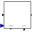

Height |
Type Information
| Real |
Quantity: Length Unit: m Restricted Range: 0 to +Inf |
|---|
Used in Components (7)
|
Modelica.Fluid.Examples.ControlledTankSystem.Utilities Controller for tank system |
|
|  |
Modelica.Fluid.Examples.ControlledTankSystem.Utilities Normal operation of tank system (button start pressed) |
|
TankWith3InletOutletArraysWithEvaporatorCondensor Modelica.Fluid.Examples.AST_BatchPlant.BaseClasses Tank with Heating and Evaporation |
|
|
Modelica.Fluid.Examples.AST_BatchPlant.BaseClasses Tank with inlet/outlet ports and with inlet ports at the top |
|
|
Modelica.Fluid.Vessels Simple tank with inlet/outlet ports |
|
|
Modelica.Fluid.Vessels.BaseClasses Lumped volume with a vector of fluid ports and replaceable heat transfer model |
|
|
Modelica.Fluid.Vessels.BaseClasses Data to describe inlet/outlet ports at vessels: diameter -- Inner (hydraulic) diameter of inlet/outlet port height -- Height over the bottom of the vessel zeta_out -- Hydraulic resistance out of vessel, default 0.5 for small diameter mounted flush with the wall zeta_in -- Hydraulic resistance into vessel, default 1.04 for small diameter mounted flush with the wall |